Quick Start¶
This quick start guide shows the basics of how to use the Pyconstruct library to solve a constrained structured prediction problem. A structured prediction problem is a machine learning task in which we want to predict some structured object, e.g. a sequence, a tree or a graph. Structured prediction problems arise often when dealing with images, text and other types of structured data. If you have at least some idea of what structured prediction is go ahead reading, otherwise check out our introduction first.
Using Pyconstruct we can represent
arbitrary structured objects as key-value assignments (i.e. dictionaries) with
integer, float or list values. For instance, a sequence object can be
represented as a dictionary like {'sequence': [1, 2, 3, 4]}.
In order to make predictions in the structured-output setting, we need a method that is able to find the object maximizing some function (the learned model). To do so, in Pyconstruct, we use the MiniZinc constraint programming language, together with some compatible constraint solver. Check-out the installation guide for the details on how to install this additional software.
OCR Equations prediction¶
In the following guide we will implement a simple model to perform OCR (Optical
Character Recognition) over handwritten equations. For this purpose, we will use
that equations dataset available in Pyconstruct, which contains sequences of
 images encoding equations of the type 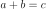. The
numbers
images encoding equations of the type 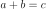. The
numbers  ,
,  ,
,  are positive integers and the equations
are all valid. The following is an example of the kind of equations contained in
this dataset:
are positive integers and the equations
are all valid. The following is an example of the kind of equations contained in
this dataset:

which contains the equation 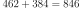. The label associated to
this sequence of images is a list: [4, 6, 2, 10, 3, 8, 4, 11, 8, 4, 6] (here
 and 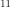 represent the 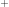 and 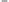 signs
respectively).
and 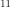 represent the 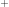 and 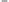 signs
respectively).
First of all, lets check out the data. Pyconstruct has a module for retrieving some predefined datasets:
from pyconstruct import datasets
eq = datasets.load('equations')
The first time the dataset is loaded, it will be fetched from the web and stored locally on your machine. You can now see the description of the dataset:
print(eq.DESCR)
The standard format to represent structured objects in Pyconstruct is by python
dictionaries. Each objects as several “attributes”, identified by some string.
Each attribute value may be a basic Python data type (integers, floats, list) or
Numpy arrays. In the equations dataset, for instance, inputs (contained in
the data member) are represented as dictionaries containing two attributes:
an integer encoding the length of the equation; a list of 9x9 matrices
(numpy.ndarray) containing the bitmap images of each symbol in the equation.
The target (i.e. the labels) also contains dictionaries with a single
attribute sequence, a list of integers representing the symbols associated
to each image in the equation. For instance:
print(eq.data[0])
print(eq.target[0])
We now have to represent our data into a MiniZinc program, which is then going to be used by Pyconstruct to generate predictions. Before coding our problem, it is first useful to look at how MiniZinc can be used for this purpose.
Intermezzo: MiniZinc for Pyconstruct¶
Here we provide a brief overview to catch the intuition behind how to use MiniZinc for structured prediction with Pyconstruct. For a detailed guide on MiniZinc, check out their webpage.
MiniZinc allows us to easily specify the structure of the objects that we want to predict, the input information we receive prior to the prediction, as well as some constraints that the output objects have to satisfy. In the case of our handwritten equations, we receive as input both the length of the sequence (an integer) as well as the list of images (Numpy array). The output is a list of integers of the same length of the input representing the symbols.
Inputs in MiniZinc are specified through “dzn” parameter variables, while the outputs are the optimiziation variables. In the equations case we would have:
int: length;
array[1 .. length, 1 .. 9, 1 .. 9] of int: images;
array[1 .. length] of var int: sequence;
The parameters length and images match the attributes provided in the
dataset. The input dictionaries will be passed by Pyconstruct to MiniZinc upon
making a prediction.
MiniZinc also allows us to easily add constraints into the mix. For example, we
know for a fact that the output sequence should contain exactly one
(associated to the symbol ) and exactly one (associated to
the symbol ), which can be easily stated in MiniZinc like:
constraint count(sequence, 10, 1) /\ count(sequence, 11, 1);
Pyconstruct actually employs a dialect of MiniZinc defined by the PyMzn library, which it uses underneath to execute the MiniZinc compiler and the solvers. The PyMzn code is simply MiniZinc with some templating bits following the Jinja2 format. This templating language allows us to do things like conditionally decide what solving method use and which function to optimize, e.g.:
{% if problem == 'map' %}
solve maximize {{ model }};
{% else %}
solve satisfy;
{% endif %}
When Pyconstruct wants to solve a MAP problem (finding the object maximizing the
model), it passes to Jinja the value 'map' for the parameter problem and
some function for the parameter model and the resulting MiniZinc solve
statement will be formatted accordingly.
Perhaps the most useful feature that templating with Jinja adds to Pyconstruct
is the ability to define packages containing reusable macros. Pyconstruct
provides a shared templating library with
quite a few modules containing reusable macros that can be used to easily define
structured prediction problems with MiniZinc. For instance, the above piece of
code generating a solve statement conditionally to the value of the problem
parameter is similar to what is done by the solve macro in the Pyconstruct
shared templating library:
{% from 'globals.pmzn' import solve %}
{{ solve(problem, model) }}
Fleshing out the domain¶
In Pyconstruct, we use the term domain to refer to the collection of input and output variables and the constraints over them. The domain essentially represent the feasible space of the objects. A domain is also equipped with an inference procedure, which given a model, returns some prediction. MiniZinc is the default method for implementing a domain in Pyconstruct.
Let’s now start coding out our OCR equations problem. Let’s create our PyMzn
file called equations.pmzn. This file will contain our domain, as well as
the method to solve sevaral inference problems. The structure of the file will
be the following:
{% from 'globals.pmzn' import domain, solve %}
{% from 'linear.pmzn' import linear_model %}
% Declare here some constants ...
{% call domain(problem) %}
% Declare here input/output variables and constraints ...
{% endcall %}
{% set n_features %}
% Declare here the number of features ...
{% endset %}
{% call linear_model(problem, params, n_features) %}
% Declare here the features ...
{% endcall %}
{% set loss %}
% Declare here the structured loss ...
{% endset %}
{{ solve(problem, loss=loss) }}
For now, we have not yet written a single MiniZinc line. The above code simply
contain some Jinja macros imported from the shared templating library of
Pyconstruct. In particular, we are going to use: the domain macro, which
will contain the actual input and output variables, as well as the constraints;
the linear_model macro, which takes care of declaring a linear model of the
type  , where 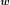 is a vector of learned
parameters passed by Pyconstruct and
, where 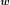 is a vector of learned
parameters passed by Pyconstruct and  is a vector of features
that we are going to declare; the
is a vector of features
that we are going to declare; the solve macro, which takes care of selecting
the right MiniZinc solve statement conditionally to the inference problem to
solve.
Let’s fill in the gaps. First of all, it is useful to add an explicit declaration of some contants that we have in this problem:
int: MAX_HEIGHT = 9;
int: MAX_WIDTH = 9;
set of int: HEIGHT = 1 .. MAX_HEIGHT;
set of int: WIDTH = 1 .. MAX_WIDTH;
% Set of symbols (labels). Digits are encoded as themselves.
% Assume '+' and '=' are encoded respectively with 10 and 11.
int: PLUS = 10;
int: EQUAL = 11;
int: N_SYMBOLS = 12;
set of int: SYMBOLS = 0 .. N_SYMBOLS - 1;
We just declared the constants encoding the maximum height and width of the
images, the number and set of symbols, and the constants encoding the + and
= signs in the sequence. These constants will turn useful later on when we
will have to declare variables and constraints. Next, we need to declare the
input and output variables. These go inside the call to the domain macro:
% Input: Length of the sequence and images
int: length;
set of int: SEQUENCE = 1 .. length;
array[SEQUENCE, HEIGHT, WIDTH] of {0, 1}: images;
% Output: Sequence of symbols
array[SEQUENCE] of var SYMBOLS: sequence;
The above code is similiar to what we have seen before, but here we used the
constants to declare the variables. Here we also imposed that the sequence has
to take values in the SYMBOLS set, the simplest form of constraint.
We now need to declare some features for the model. A standard choice when
handling sequences is to use unary and pairwise features, like those used in a
chain CRF. Unary features, also called emission features, correlate the input
“attributes” of the elements of the sequence with the output labels of the
sequence. For each attribute and each label 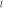, the emission
features sum the values of the attribute for the active elements of
the sequence, i.e. elements of the sequence that are being assigned the label
. In the case of the handwritten equations, the input attributes
correspond to the pixels of the images, while the labels are the output symbols.
On the other hand, pairwise features correlate pairs of labels 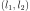, counting the number of times in the sequence the label 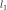 is
followed by the label 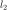.
Pyconstruct provides utilities for handling this kind of features out of the
box. These are included in the chain.pmzn file. What we need to do first is
to flatten the images into a two-dimensional vector of attributes:
% Constants
int: N_PIXELS = MAX_HEIGHT * MAX_WIDTH;
set of int: PIXELS = 1 .. N_PIXELS;
% Domain
array[SEQUENCE, PIXELS] of {0, 1}: pixels = array2d(SEQUENCE, PIXELS, [
images[s, i, j] | s in SEQUENCE, i in HEIGHT, j in WIDTH
]);
After defining the attribute vector, we can use the macros in the chain.pmzn
library to define the features for our linear model:
{% from 'chain.pmzn' import
n_emission_features, emission_features,
n_transition_features, transition_features
%}
{% set n_features %}
{{
n_emission_features(n_attributes='N_PIXELS', n_labels='N_SYMBOLS')
}}
+
{{
n_transition_features(n_labels='N_SYMBOLS')
}}
{% endset %}
{% call linear_model(problem, params, n_features) %}
{{
emission_features(
attributes_var='pixels', attributes_set='PIXELS',
sequence_var='sequence', sequence_set='SEQUENCE',
labels_set='SYMBOLS'
)
}}
++
{{
transition_features(
sequence_var='sequence', sequence_set='SEQUENCE',
labels_set='SYMBOLS'
)
}}
{% endcall %}
The above code will compile into something like:
int: N_FEATURES = N_PIXELS * N_SYMBOLS + N_SYMBOLS * N_SYMBOLS;
set of int: FEATURES = 1 .. N_FEATURES;
array[FEATURES] of var float: phi = [
sum(e in SEQUENCE)(pixels[e, a] * sequence[e] == l)) | a in PIXELS, l in SYMBOLS
]
++
[
sum(e1, e2 in SEQUENCE where e1 < e2)(sequence[e1] == l1 /\ sequence[e2] == l2) | l1, l2 in SYMBOLS
];
array[FEATURES] of float: w = [
% weights found in the model paramenters
];
var float: score = sum(e in SEQUENCE)(w[e] * phi[e]);
Notice that we used the variables problem and params: these are standard
global variables passed to all domains by Pyconstruct. The params variable,
in particular, is a dictioray containing the parameters of the model, which can
be used to define the model directly into the MiniZinc file. These are the same
parameters that are returned by the params property of a Model instance.
The last piece we need to add is the structured loss function. When learning a
large margin model (Structured SVM), the inference oracle has to repeatedly
solve the so-called loss-augmented inference problem, which is simply an
optimization problem of the type 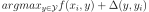 for some input-output pair 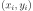 in the training set. The
function 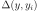 is the structured loss, a problem-dependent
metric that evaluates the goodness of the prediction  agaist the true
label 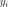. When Pyconstruct needs to solve a loss-augmented inference,
passes the value
agaist the true
label 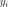. When Pyconstruct needs to solve a loss-augmented inference,
passes the value loss_augmented_map to the problem global variable and
the solve macro takes care of the rest. The only information it requires is
the actual definition of the loss. When solving a loss_augmented_map
inference, Pyconstruct also passes a variable y_true, which contains the
true label to be used for the loss-augmented inference. In order to access this
variable in the MiniZinc code we need to add the following code to the domain:
{% if problem == 'loss_aumented_map' %}
array[SEQUENCE] of int: true_sequence = {{ y_true['sequence']|dzn }};
{% endif %}
In the above code we declared an array called true_sequence conditionally to
the problem being a loss_augmented_map. In the above code we used the a
Jinja filter dzn provided by the PyMzn library, which takes any python
object and serializes it into dzn format.
We now have to declare the loss. A standard loss for sequence prediction problem
is the (normalized) Hamming loss. The Pyconstruct shared templating library
provides an utility macro to compute the hamming loss of two sequences. We just
need to import the macro hamming from the library metrics.pmzn:
{% from 'metrics.pmzn' import hamming %}
{% set loss %}
{{
hamming(
sequence_set='SEQUENCE', sequence='sequence',
true_sequence='true_sequence'
)
}}
{% endset %}
The final model should look like this:
{% from 'globals.pmzn' import domain, solve %}
{% from 'linear.pmzn' import linear_model %}
{% from 'chain.pmzn' import
n_emission_features, emission_features,
n_transition_features, transition_features
%}
{% from 'metrics.pmzn' import hamming %}
int: MAX_HEIGHT = 9;
int: MAX_WIDTH = 9;
set of int: HEIGHT = 1 .. MAX_HEIGHT;
set of int: WIDTH = 1 .. MAX_WIDTH;
% Set of symbols (labels). Digits are encoded as themselves.
% Assume '+' and '=' are encoded respectively with 10 and 11.
int: PLUS = 10;
int: EQUAL = 11;
int: N_SYMBOLS = 12;
set of int: SYMBOLS = 0 .. N_SYMBOLS - 1;
% Constants
int: N_PIXELS = MAX_HEIGHT * MAX_WIDTH;
set of int: PIXELS = 1 .. N_PIXELS;
{% call domain(problem) %}
% Input: Length of the sequence and images
int: length;
set of int: SEQUENCE = 1 .. length;
array[SEQUENCE, HEIGHT, WIDTH] of {0, 1}: images;
% Output: Sequence of symbols
array[SEQUENCE] of var SYMBOLS: sequence;
{% if problem == 'loss_aumented_map' %}
array[SEQUENCE] of int: true_sequence = {{ y_true['sequence']|dzn }};
{% endif %}
array[SEQUENCE, PIXELS] of {0, 1}: pixels = array2d(SEQUENCE, PIXELS, [
images[s, i, j] | s in SEQUENCE, i in HEIGHT, j in WIDTH
]);
{% endcall %}
{% set n_features %}
{{
n_emission_features(n_attributes='N_PIXELS', n_labels='N_SYMBOLS')
}}
+
{{
n_transition_features(n_labels='N_SYMBOLS')
}}
{% endset %}
{% call linear_model(problem, params, n_features) %}
{{
emission_features(
attributes_var='pixels', attributes_set='PIXELS',
sequence_var='sequence', sequence_set='SEQUENCE',
labels_set='SYMBOLS'
)
}}
++
{{
transition_features(
sequence_var='sequence', sequence_set='SEQUENCE',
labels_set='SYMBOLS'
)
}}
{% endcall %}
{% set loss %}
{{
hamming(
sequence_set='SEQUENCE', sequence='sequence',
true_sequence='true_sequence'
)
}}
{% endset %}
{{ solve(problem, loss=loss) }}
We are now ready to launch a learning algorithm over our domain. However, we have not really done with the domain yet. We still have not covered one of the main perks of using MiniZinc as a domain modeller: adding background knowledge as constraints. Adding constraints can speed-up learning and can drastically reduce the number of examples needed to learn an accurate model. In the OCR equations setting, we actually know several facts about our problem and the data, e.g. the numbers are positive integers, the plus always comes before the equal sign, and the equations are always valid.
If you want to add constraints right away, check out the following section. If instead you want to go strait to learning a model with the model we have written so far, jump to the dedicated section further down.
Adding background knowledge as constraints¶
We are now going to add some constraints to the domain based on the facts we
know about the OCR equations problem. Recall that the examples in the dataset
are all valid equations of the form , with positive ,
and . We are now going to encode this knowledge into the
domain step-by-step.
Let’s start by the fact that no matter how many digits the numbers have, there
are always going to be exaclty one sign and exaclty one
sign. We can use the minizinc global constraint count for this. In order to
use the global constraints we need to include the library globals.mzn
first:
% At the top
include "globals.mzn";
% In the domain
constraint count(sequence, PLUS, 1) /\ count(sequence, EQUAL, 1);
About the operators, we also know that the plus sign always comes before the equal sign. To encode this constraint it is convenient to extract the indices of the two operators from the sequence:
% Indices of the two operators
array[1 .. 2] of var 2 .. length - 1: opr;
constraint sequence[opr[1]] == PLUS /\ sequence[opr[2]] == EQUAL;
constraint increasing(opr);
constraint opr[1] + 1 < opr[2];
The first of the above constraints enforces the variables opr[1] and
opr[2] to be indices corresponding to the sequence values PLUS and
EQUAL. Together with the uniqueness contraint defined earlier, this ensures
that the two variables are indeed the two indices of the two operators. The
second constraint is a MiniZinc global constraint the operator indice to be
ordered increasingly. Together with the previous constraint, this means that the
PLUS value must come before the EQUAL value. The third constraint
forces the number inbetween the two operators to have at least one digit.
We want now to impose the validity of the equations. To do so, we need to extract the actual numeric values encoded in the sequence of digits. This process is going to require a few advanced constructs from MiniZinc, so make sure you are confortable with them.
To extract the values, we are going to sum the digits multiplied by the
corresponding power of ten. We first need to make an assumption: we need to set
the maximum number of digits in the numbers (can be arbitrary large). In the OCR
equation dataset, the maximum is three digits per number. We then need to put
the digits into a matrix of three zero-padded vectors of length MAX_DIGITS:
int: MAX_DIGITS = 3;
array[1 .. 4] of var 0 .. length+1: ext = [0, opr[1], opr[2], length+1];
constraint forall(i in 1 .. 3)(ext[i+1] - ext[i] <= MAX_DIGITS + 1);
constraint forall(i in 1 .. 3)(sequence[ext[i] + 1] != 0);
array[1 .. 3, 1 .. MAX_DIGITS] of var 0 .. 9: num_matrix = array2d(1 .. 3, 1 .. MAX_DIGITS, [
if ext[i] + MAX_DIGITS - k < ext[i+1] then
sequence[ext[i+1] - MAX_DIGITS + k]
else
0
endif
| i in 1 .. 3, k in 0 .. MAX_DIGITS-1
]);
In the above code we declared an array ext of the extremes of each number.
The two following constraints enforce the length of each number to be lower than
MAX_DIGITS and the first digit of each number to be different from zero.
Then, for each two consecutive extremes we extracted one vector containing the
zero-padded numbers, iterating over k. The conditional statement makes sure
the arrays are populated as we expect. For instance, for the sequence 34 + 56
= 90 we get:
num_matrix = [| 0, 3, 4
| 0, 5, 6
| 0, 9, 0 |];
We can then extract the three numbers by summing powers of ten:
int: MAX_NUM = pow(10, MAX_DIGITS + 1);
array[1 .. 3] of var 0 .. MAX_NUM: num = [
sum(j in 1 .. MAX_DIGITS)(
pow(10, MAX_DIGITS - j) * num_matrix[i, j]
) | i in 1 .. 3
];
Finally, we can impose the validity of the equation simply by adding the constraint:
constraint num[1] + num[2] == num[3];
This type of constraints is especially illustrative of the expressive power of MiniZinc. We just extracted the actual semantic meaning of the sequence of symbols and we reasoned over it. This is something that standard models (even structured ones) cannot do. This is especially useful in settings where there and very few examples to learn from and rich semantic knowledge. While this OCR equations setting is a very toy example, it is easy to see the potential in the Pyconstruct library for modelling very complex tasks like product configuration, planning, dialogue management and more.
Learning and evaulating a model¶
Whether or not you added the constraints to the domain, you now have your domain
fully encoded in the file equations.pmzn and that is all it is needed to
learn a predictive structured model. Pyconstruct can is pretty flexible, it
allows to use the following code for learning with different domains. This also
means that if you want to add some constraints to an existing model you only
need to modify the MiniZinc file, without worrying about the python code for
learning.
Let’s go ahead and fit a model with the OCR equations data over the domain we
just defined. In python we need to instantiate a Domain, passing the path to
our equations.pmzn file:
from pyconstruct import Domain
eq_dom = Domain('equations.pmzn')
Now, let’s instantiate a Learner. A learner is a Pyconstruct object that is able
to learn a model using some learning algorithm. Pyconstruct learners work
exaclty like Scikit-learn estimators: we first need to instantiate the learner
with the hyper-parameters we want to use, and then call the fit function
passing the data. One of the state-of-the-art learning algorithms for learning
structured SVMs is Stochastic Subgradient Descent, also known as SSG. Let us use
the SSG learner for estimating a linear model over the OCR equation domain:
from pyconstruct import SSG
ssg = SSG(eq_dom)
If you need to set some configuration for PyMzn, now is the time. For instance, if you want to set Gurobi as the solver used by Pyconstruct, you can do so by setting the default solver in PyMzn:
import pymzn
pymzn.config.set('solver', pymzn.gurobi)
At this point we are ready to start the fitting process:
ssg.fit(eq.data, eq.target)
That is pretty much it. We passed the domain to the SSG constructor and then we
called the fit method, which will pass through the entire dataset and learn
a model calling MiniZinc several times to make inference. After learning we can
pass some batch of examples X to the predict function to get
predictions:
Y = ssg.predict(X)
This process will take some time depending on your machine and the solver used.
To speed-up things a bit, you can make inference over a batch of data in
parallel. This can be done by setting the parameter n_jobs in the domain
instance:
eq_dom = Domain('equations.pmzn', n_jobs=4)
Also, we can parallelize the computation of the gradient steps in the SSG
learner:
ssg = SSG(eq_dom, n_jobs=4)
Another common strategy is to use approximate inference. A very simple way to have approximate inference is to set a timeout to the solver and get the best-so-far solution. This can be done by setting the timeout in the PyMzn configs:
pymzn.config.set('timeout', 5) # timeout 5 seconds
Now the training should be smoother even on low-end machines.
While the above code should cover many of the typical cases, Pyconstruct also let’s you have more control over the learning process. First of all, you would probably want to test the model after it is trained. Therefore we probably want to split the data into training and test set. We can use the utility from Scikit-learn for this:
from sklearn.model_selection import train_test_split
X_train, X_test, Y_train, Y_test = train_test_split(eq.data, eq.target, test_size=0.2)
Another thing that you probably want to do is to evaluate the model on the
training set while it is training. Most of Pyconstruct learners are online
learners, so they can learn step-by-step from mini-batches of data. Online
learners implement the partial_fit method, which takes a mini-batch of data
and updates the current parameters of the model. To split the dataset into
batches and iterate over them, we can use the batches Pyconstruct utility:
from pyconstruct.utils import batches
for X_b, Y_b in batches(X_train, Y_train, batch_size=10):
ssg.partial_fit(X_b, Y_b)
We can now evaluate our model on the training set right before making a learning step on the batch. To evaluate our sequences we can use again the Hamming loss:
from pyconstruct.metrics import hamming
def loss(Y_pred, Y_true):
return hamming(Y_pred, Y_true, key='sequence')
The above function computes the hamming loss over the sequence key of all
the objects in the Y_pred and Y_true batches and returns a Numpy vector
with all the values.
We can now compute the losses on the training batches and print the average:
for X_b, Y_b in batches(X_train, Y_train, batch_size=10):
Y_pred = ssg.predict(X_b)
avg_loss = loss(Y_b, Y_pred).mean()
print('Training loss {}'.format(avg_loss))
ssg.partial_fit(X_b, Y_b)
Finally we can test the model learned by SSG on the test set:
Y_pred = ssg.predict(X_test)
avg_loss = loss(Y_test, Y_pred).mean()
print('Test loss {}'.format(avg_loss))
This covers the basics of out to use Pyconstruct. Check out the reference manual to learn more about all the components and the ways you can tweak Pyconstruct to solve your structured prediction problem.